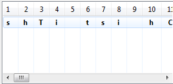
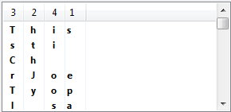
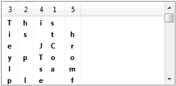
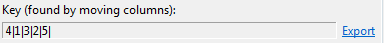
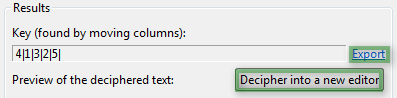
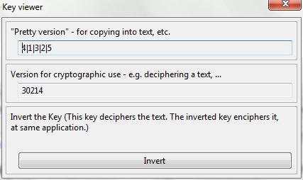

The transposition analysis plug-in will help you to decipher a text, which was encrypted with the simple (single-column) transposition cipher.
The simple transposition cipher needs a key of length n, which defines the reordering of characters in a text of the same length n. Typically, such a key is expressed with the positions of the characters in the reordered text.
For example:
Key = "1 | 4 | 3 | 2 |"
Plaintext = "TEST"
Cipher = "TTSE"
To apply this encryption to a whole text, this text is split up in blocks of length n, and each block is encrypted with the transposition key.
You can read more about the transposition cipher in the User Manual -> Cryptology
The block length is equal to the key length. It is very useful if you get to know the block length, because every block is encrypted in the same way. Break up the cipher into blocks of the blocklength and write them one below the other. If you find the right order (equals key) for the characters of one line, you found also the right order for every other line - because each line represents a block, and originally, each block was encrypted simultaneously. If you found the right order for one line, but the other line seem to make no sense with this order, it is likely, that your block length (key length) wasn't the right one - try another with the order of the word you found.
Other than this plain manual decipherment of the transposition cipher, there are also algorithmic approaches. For example: The block length is most usually a divider of the length of the cipher; an algorithm can find the most frequent character pairs/triplets in the text, and do calculation over their position and order; Multiple appearance of the same piece of ciphertext, etc.
The transposition analysis plug-in takes care of the reordering of the text into the mentioned arrangement of blocks written under each other (looks like a table with column count n, because each block has the length n). The columns of this table are reorderable, so that it becomes easy to try around with possible blocklengths and column orders easily.
The main view of the transposition analysis plug-in is divided into to columns. on the left are the control elements, and on the right are some instructions, and a preview of all results.
First, a ciphertext has to be loaded. With a click on the button, a wizard opens up to assist you. In this wizard, every setting you change will be previewed on the bottom, just like it will look in the main view after finishing the wizard.
Initially, the currently opened editor's text is loaded, but with the drop down menu under the text field, you can choose whatever (opened) editor's content you like.
In the group "Shorten the text [...]" you can choose whether you want to have the whole text, or just a part of it in the table. In most cases, this setting adjusts itself into your best choice (although there is nothing wrong if you change it, though), in the following manner:
* If you choose to actually write the text in blocks below each other (Setting 'column count' is other than 0, see below), the full text is taken (shorten text deactivated - it doesn't cause clutter with long texts, because the text is written in blocks below each other).
* If you choose to leave the text unblocked for now (everything in one line in the table), it makes sense in most case, just to take a part of the text, and the text shorting is activated.
In the next group, "Transposition columns", you can choose the blocklength of the blocks written in the table under each other. Effectively, this is your analysed key length. Of course, you can change this important setting everytime, outside the wizard, too.
The theoretical analysis of a ciphertext was described in the first part of this help. We will now exercise this on an example:
We got the following transposition cipher:
shTi tsi hC eJropyToa lsm lpef.lieYcuo as nueit hslf ierf o a afst tsawtr i
and we load it into the plug-in. Because we have no clue about the key length, we left the column count at "0", that means, that we look at the text written in a single line for now. We get:

As it seems, the letter "T" was the begin of a word, or, more likely, the begin of the text. The two spaces point out two short words, because we have two spaces for only eight letters. These are enough hints for us to make a first try: We guess the block length as 4 (adjust this setting with the field above the table) and sort the columns as follows:

It seems like the first word of the text was "This". Every other order is not making any sense. But as we order our columns that way, the other lines seem to contain no good text. We just found a first word, but guessed the column count wrong. Time to try around with the column count: We try "5" as the next column count/block length/key length, and reorder the columns again in a way, that the word "This" appears in the first line. We get:

Seems like we found the right combination. The columns now read "This is the JCrypTool sample file[...]". We have found the right key, which is standing right next to the table:

Note that you can see the text, as it would look decrypted by your column-reorderings, in the preview text field to the bottom right of the view, which is sometimes easier to read than the text in the table.

Now, when it seems, that you found the right key, the next thing you would like to do is, to decipher the text into a new editor, for saving / postprocessing it. The button above the preview text field can do this for you. Alternatively, copy the key (see below: use the export link to get an algorithm-readable form) and open the Transposition algorithm wizard (algorithm view). Choose "Decrypt", and enter the copied key into the first key text field, then finish the wizard.
You can also view the found key, by clicking the "export" link next to the key field:

The "pretty version", which could also be seen in the main view, is easy to read and meant to be used in a text, but can mostly not be used with cryptographic algorithms.
The second version fixes this, by having a form that all algorithms can understand (but is not as easy to read as the first version, especially for long keys, when the digits run out)
The last option is to display the inverse key. Every transposition key has exactly one inverse key, which does the exact opposite of the original when applied to a text. In fact, decrypting a text is just encrypting it with the inverse key, and sometimes it is useful to know the inverse key.
Soon, it will be possible to run automated and semiautomated analysis over the selected text with the link in the right column of the main view.